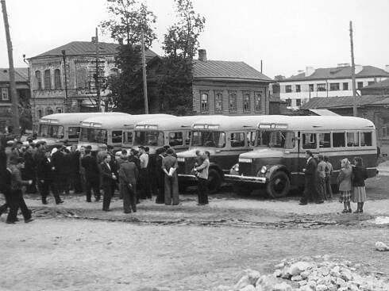

Первой продукцией ООО "Павловский автобусный завод" был автотракторный инструмент для Горьковского автомобильного завода.
Павловский автобусный завод начали строить 5 августа 1930 года. Первый выпуск продукции - в октябре 1932 года.
24 апреля 1952 года принято решение о реконструкции завода и смене выпускаемой продукции - утверждена программа производства 10 тысяч автобусов под маркой "ПАЗ".
Первый Павловский автобус имел обозначение ПАЗ-651, однако во внутренней технический переписке по заводу он обозначался как ГЗА-651 и только после того, как в его конструкции появились сварные узлы, он получил наименование окончательное своё название ПАЗ-651.
В 1960 году начался серийный выпуск новой модели автобуса вагонного типа ПАЗ - 652. В её основе был заложен принцип несущего кузова. Двигатель установили на него имеющий мощность 90 лошадиных сил.
Опыт эксплуатации первых опытных ПАЗ-652 показал слабость некоторых элементов кузова. В целях устранения выявленных недостатков, на пятом году выпуска 652-ой модели была создана новая модификация – ПАЗ-652Б с более усиленным кузовом - внедрили такие элементы как консоли, лонжероны и поперечины.
По своим техническим характеристикам ПАЗ-32031 практически полностью копировал базовую модель – городской автобус ПАЗ-3203. Задняя площадка была свободной, сиденья, расположенные по бокам салона сзади были двухместными. Автобус мог принять до 45-ти человек в сидячем положении. Максимальная вместимость салона до 60-ти человек.
В 1989 году завод перешел на серийное производство автобусов ПАЗ-3205
Базовый вариант с одной автоматической дверью, карбюраторным двигателем ЗМЗ-5234. 10 и пневмогидравлической тормозной системой. В настоящее время снят с производства.
Система питания работает следующим образом.
Топливо из топливного бака 1 засасывается топливоподкачивающим насосом 4 через фильтр 2 грубой отчистки. Из насоса 4 топливо поступает в фильтр 11 тонкой отчистки топлива, в котором оно окончательно очищается от мельчайших загрязнений и затем поступает в насос высокого давления 5 по трубопроводу 3. Из насоса 5 дозированные порции топлива под высоким давлением подаются по топливопроводам 9 высокого давления в форсунки 10 в соответствии с порядком работы двигателя для впрыска топлива в цилиндры.
Излишки топлива, подаваемого топливоподкачивающим насосом 4 к насосу высокого давления, отводя через трубку перепускного клапана 8 топливного насоса высокого давления обратно в топливный бак по трубопроводам 12.
Жирный текст Текст курсивом Ссылка| Кузов | Несущий, вагонной компоновки |
| Колёсная формула | 4 × 2 |
| Число мест для сидения | 23 |
| Общее число мест | 42 |
| Максимальная скорость, км/ч | 90 |
| Контрольный расход топлива при 60 км/ч, л/100 км | 19 |
| Ёмкость топливного бака, л | 105 |
| Тормозная система | Пневматическая, двухконтурная с ABS |
| Длина, мм | 7 000 |
| Ширина, мм | 2 530 |
| Высота, мм | 2 880 |
Большое количество наших клиентов это перевозчики, непосредственно осуществляющие деятельность по перевозке пассажиров. Это позволяет нам иметь обратную связь о качестве поставляемых запчастей, помогать производителям в доработке узлов и агрегатов для обеспечения потребителей более качественными запасными частями ПАЗ, ЛиАЗ, КАвЗ, МАЗ, ГАЗ, УАЗ.
Большое количество наших клиентов это перевозчики, непосредственно осуществляющие деятельность по перевозке пассажиров. Это позволяет нам иметь обратную связь о качестве поставляемых запчастей, помогать производителям в доработке узлов и агрегатов для обеспечения потребителей более качественными запасными частями ПАЗ, ЛиАЗ, КАвЗ, МАЗ, ГАЗ, УАЗ.
Большое количество наших клиентов это перевозчики, непосредственно осуществляющие деятельность по перевозке пассажиров. Это позволяет нам иметь обратную связь о качестве поставляемых запчастей, помогать производителям в доработке узлов и агрегатов для обеспечения потребителей более качественными запасными частями ПАЗ, ЛиАЗ, КАвЗ, МАЗ, ГАЗ, УАЗ.
На складе нашего предприятия находится порядка 15 000 позиций различных автозапчастей. Наличие собственного автопарка позволяет нам выстраивать логистику.